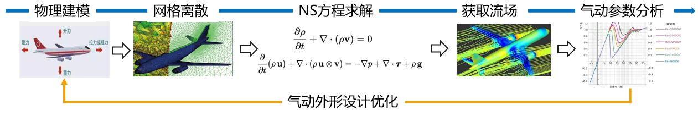
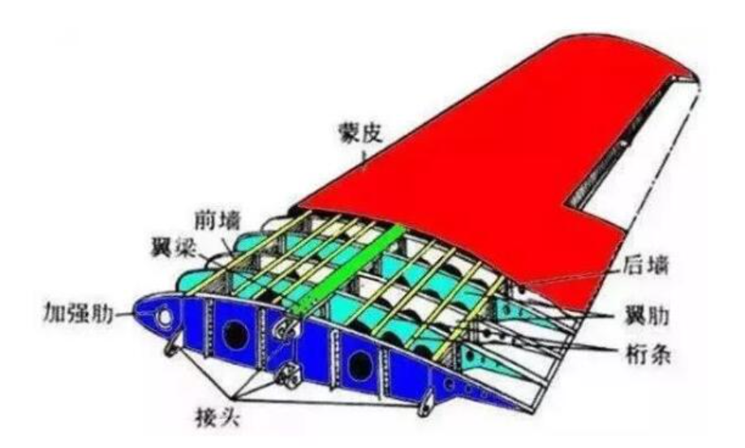
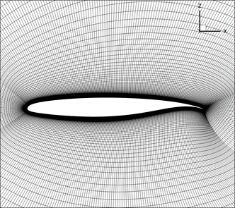
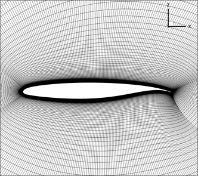
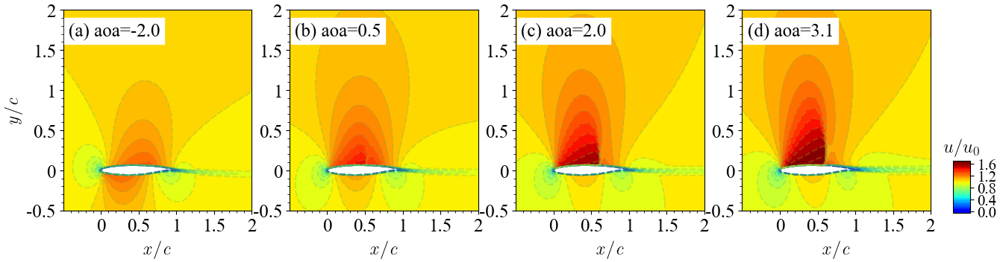
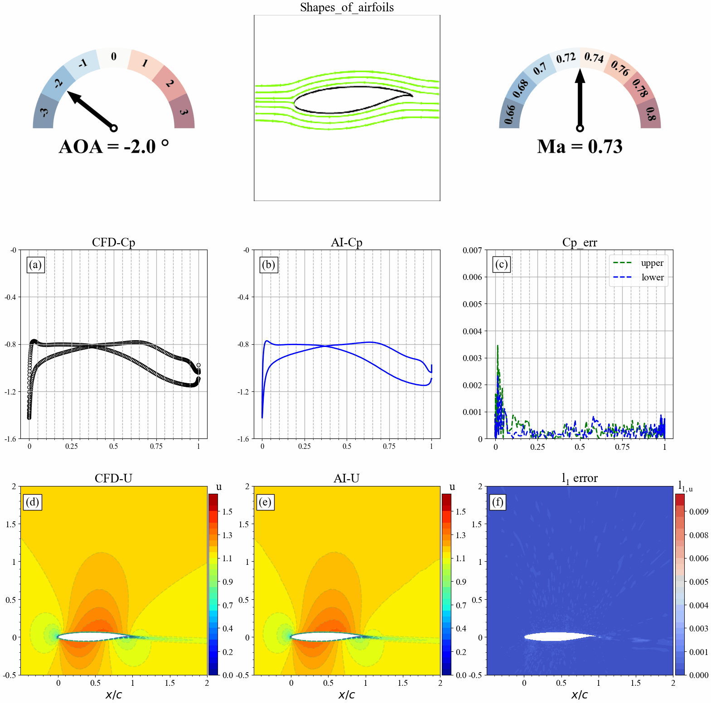

AI工业流体仿真模型——东方·御风

概述
“东方·御风” 是基于昇腾AI打造的面向大型客机翼型流场高效高精度AI预测仿真模型， 并在昇思MindSpore流体仿真套件的支持下，有效提高了对复杂流动的仿真能力，仿真时间缩短至原来的二十四分之一，减小风洞实验的次数。同时，“东方·御风”对流场中变化剧烈的区域可进行精准预测，流场平均误差降低至万分之一量级，达到工业级标准。
本教程将对“东方·御风”的研究背景和技术路径进行介绍，并展示如何通过MindFlow实现该模型的训练和快速推理，以及流场可视化分析，从而快速获取流场物理信息。
背景介绍
民用飞机气动设计水平直接决定飞机的“四性”，即安全性，舒适性，经济性，环保性。飞机的气动设计作为飞机设计中最基础，最核心的技术之一，在飞机飞行包线（起飞-爬升-巡航-下降-降落等）的不同阶段有着不同的研究需求和重点。如起飞阶段工程师将更关注外部噪声和高升阻比，而巡航阶段则关注油耗效率和能耗效率。流体仿真技术在飞机的气动设计的应用广泛，其主要目的在于通过数值计算的方法 获取仿真目标的流场特性（速度、压力等），进而分析飞机的气动性能参数，实现飞行器的气动性能的优化设计。

目前，飞行器的气动仿真通常采用商业仿真软件对流体的控制方程进行求解，得到相应的气动性能参数（升阻力，压力，速度等）。无论基于何种CFD的仿真软件，都包含以下几个步骤：
物理建模：将物理问题抽象简化，对相关几何体的2D/3D的流体和固体计算域进行建模。
网格划分：将计算域划分为相应大小的面/体积单元，以便解析不同区域不同尺度的湍流。
数值离散：将流体控制方程中的积分、微分项、偏导项通过不同阶的数值格式离散为代数形式，组成相应的代数方程组。
流体控制方程求解：利用数值方法（常见的如
SIMPLE算法、PISO算法等）对离散后的控制方程组进行迭代求解，计算离散的时间/空间点上的数值解。流场后处理：求解完成后，使用流场后处理软件对仿真结果进行定性和定量的分析和可视化绘图，验证结果的准确性。

然而，随着飞机设计研制周期的不断缩短，现有的气动设计方法存在诸多局限。为使大型客机的气动设计水平赶超波音和空客两大航空巨头，必须发展先进的气动设计手段，结合人工智能等先进技术，建立适合型号设计的快速气动设计工具，进而提高其对复杂流动的仿真能力，减少风洞试验的次数，降低设计研发成本。
在飞行器的设计中，机翼的阻力分布约占整体飞行阻力的52%，因此，机翼形状设计对飞机整体的飞行性能而言至关重要。然而，三维翼型高精度CFD仿真需划分成百上千万量级的计算网格，计算资源消耗大，计算周期长。为了提高仿真设计效率，通常会先针对三维翼型的二维剖面进行设计优化，而这个过程往往需要对成千上万副的翼型及其对应工况进行CFD的重复迭代计算。其中，超临界翼型在高速巡航阶段的有着重要的应用。因为相较于普通翼型，超临界翼型的头部比较丰满，降低了前缘的负压峰值，使气流较晚到达声速，即提高了临界马赫数；同时，超临界翼型上表面中部比较平坦，有效控制了上翼面气流的进一步加速，降低了激波的强度和影响范围，并且推迟了上表面的激波诱导边界层分离。因此，超临界翼型有着更高的临界马赫数，可大幅改善在跨音速范围内的气动性能，降低阻力并提高姿态可控性，是机翼形状中必须考虑的设计。

然而，二维超临界翼型的气动设计需要针对不同的形状参数和来流参数进行仿真，依然存在大量的重复迭代计算工作，设计周期长。因此，利用AI天然并行推理能力，缩短设计研发周期显得尤为重要。基于此，商飞和华为联合发布了业界首个AI工业流体仿真模型– “东方·御风” ，该模型能在超临界翼型的几何形状、来流参数（攻角/马赫数）发生变化时，实现大型客机翼型流场的高效高精度推理，快速精准预测翼型周围的流场及升阻力。
技术难点
为了实现超临界翼型的的AI高效高精度流场预测，需要克服如下的技术难点：
翼型网格疏密不均，流动特征提取困难。 二维翼型计算域的流体仿真网格常采用O型或C型网格。如图所示，为典型的O型网格剖分。为了精准地计算流动边界层，对翼型近壁面进行了网格加密，而来流远场的网格则相对稀疏。这种非标的网格数据结构增加了提取流动特征的困难程度。
 

不同气动参数或翼型形状发生改变时，流动特征变化明显。 如图所示，当翼型的攻角发生变化时，流场会发生剧烈的变化，尤其当攻角增大到一定程度时，会产生激波现象：即流场中存在明显的间断现象，流体在波阵面上的压力、速度和密度形成明显的突跃变化。

激波区域流场变化剧烈，预测困难。 由于激波的存在对其附近的流场影响显著，激波前后的流场变化剧烈，流场变化复杂，导致AI预测困难。激波的位置直接影响着翼型的气动性能设计和载荷分布。因此，对激波信号的精准捕捉是十分重要但充满挑战的。
技术路径
针对如上所述的技术难点，我们设计了基于AI模型的技术路径图，构建不同流动状态下翼型几何及其对应流场的端到端映射， 主要包含以下几个核心步骤：
首先，设计AI数据高效转换工具，实现翼型流场复杂边界和非标数据的特征提取，实现规则化AI张量数据生成，再利用几何编码方式加强复杂几何边界特征的提取。
其次，利用神经网络模型，实现不同流动状态下翼型构型和流场物理量的映射，模型的输入为转换后所生成的翼型几何信息和气动参数；模型的输出为转换后生成的流场物理量信息，如速度和压力。
最后，利用自适应的损失函数训练网络的权重，提升流场剧烈变化区域（如激波）的预测精度。
准备环节
实践前，确保已经正确安装最新版本的MindSpore与MindFlow。如果没有，可以通过：
MindSpore安装页面安装MindSpore。
MindFlow安装页面安装MindFlow。
“东方·御风”MindFlow实现
“东方·御风”MindFlow实现分为以下6个步骤：
数据集制作与加载。
配置网络与训练参数。
模型构建。
模型训练。
模型推理。
结果可视化。
数据集制作与加载
首先将CFD的数据集转换成张量数据，然后将张量数据转换成MindRecord。设计AI数据高效转换工具，实现翼型流场复杂边界和非标数据的特征提取。
AI流体仿真目前支持使用本地数据集训练，通过MindDataset接口可以配置相应数据集选项，需要指定MindRecord数据集文件位置。
配置网络与训练参数
配置文件包括四类参数，分别为模型相关参数（model）、数据相关参数（data）、优化器相关参数（optimizer）、输出相关参数（callback）。其中ViT模型最重要的参数为encoder和decoder的depth、 embed_dim和num_heads，分别控制模型中layer数、隐向量的长度以及多头注意力机制的头数。具体参数配置含义默认值如下：
model:
name: "ViT" # Model name
exp:
input_dims: 3 # Input data channel
output_dims: 3 # Output data channel
height: 192 # Height of the grid
width: 384 # Width of the grid
encoder_depth: 6 # Depth of the encoder
encoder_embed_dim: 768 # Embedding dimensions of the encoder
encoder_num_heads: 12 # Numbers of attention-heads of the encoder
decoder_depth: 6 # Depth of the decoder
decoder_embed_dim: 512 # Numbers of attention-heads of the decoder
decoder_num_heads: 16 # Numbers of attention-heads of the decoder
data:
data_path: "" # Path to data
grid_path: "" # Path to grid
train_size: 0.2 # Ratio of train and test dataset
train_num_list: [301] # Airfoils index of train dataset [301~350]
test_num_list: [451] # Airfoils index of test dataset [451~500]
batch_size: 32 # Batch size of train
test_batch_size: 32 # Batch size of test
post_dir: "./postprocessing/plot_results/" # Path to postprocessing
max_value_list: [ 4.6, 1.0, 0.18418664581293126] # Max values of input data
min_value_list: [-2.0, -0.18382872836312403, -0.1839052340212462] # Min values of input data
optimizer:
epochs: 1000 # The number of train epoch
lr: 0.0005 # Initial learning rate
gamma: 0.2 # The gamma value of the optimizer
callback:
summary_dir: "./summary_dir/summary_" # Path to Summary
save_checkpoint_epochs: 1000 # Frequency of checkpoint results
keep_checkpoint_max: 1 # Maximum number of checkpoint files can be save
eval_interval: 10 # TestSet Accuracy Test Frequency
模型构建
这里以ViT模型作为示例，该模型通过MindFlow的模型定义的ViT接口构建，需要指定ViT模型的参数。您也可以构建自己的模型。
model = ViT(input_dims=model_params[method]['input_dims'],
output_dims=model_params['output_dims'],
encoder_depth=model_params['encoder_depth'],
encoder_embed_dim=model_params['encoder_embed_dim'],
encoder_num_heads=model_params['encoder_num_heads'],
decoder_depth=model_params['decoder_depth'],
decoder_embed_dim=model_params['decoder_embed_dim'],
decoder_num_heads=model_params['decoder_num_heads'],
)
模型训练
首先，通过load_config_params函数加载配置文件获得模型参数，然后调用initial_data_and_model函数获得train_dataset, eval_dataset, model, model_name。学习率可通过MindFlow提供的warmup_cosine_annealing_lr函数获得。
MindSpore提供Model类用于模型训练和推理，Model类输入为网络模型、优化器、损失缩放策略和loss函数。
class TrainModel:
def __init__(self, model_name, loss_fn):
self.model_name = model_name
self.loss_fn = loss_fn
def train_with_eval(self):
"""train"""
data_params, model_params, optimizer_params, callback_params = load_config_params(opt.config_path)
train_dataset, eval_dataset, model, model_name = initial_data_and_model(
self.model_name + '_' + str(opt.alpha), data_params, model_params, opt.method)
ckpt_dir, summary_dir = self._set_dirs(callback_params, model_name)
steps_per_epoch = train_dataset.get_dataset_size()
lr = warmup_cosine_annealing_lr(optimizer_params["lr"], steps_per_epoch, 1, optimizer_params["epochs"])
optimizer = nn.Adam(model.trainable_params() + self.loss_fn.trainable_params(), learning_rate=Tensor(lr))
loss_scale = DynamicLossScaleManager()
solver = Model(model,
optimizer=optimizer,
loss_scale_manager=loss_scale,
loss_fn=self.loss_fn,
)
pred_cb, summary_cb, time_cb = self._callback(eval_dataset, model, summary_dir, callback_params, data_params)
ckpt_cb = self._checkpoint(callback_params, ckpt_dir, steps_per_epoch)
solver.train(epoch=optimizer_params["epochs"],
train_dataset=train_dataset,
callbacks=[LossMonitor(), pred_cb, time_cb, ckpt_cb],
dataset_sink_mode=True)
@staticmethod
def _set_dirs(callback_params, model_name):
summary_dir = os.path.join(callback_params["summary_dir"] + opt.method, model_name)
ckpt_dir = os.path.join(summary_dir, "ckpt_dir")
check_file_path(ckpt_dir)
print(f'model_name: {model_name}')
print(f'config_path: {opt.config_path}')
print(f'summary_dir: {summary_dir}')
print(f'ckpt_dir: {ckpt_dir}')
return ckpt_dir, summary_dir
@staticmethod
def _callback(eval_dataset, model, summary_dir, callback_params, data_params):
# callback
pred_cb = PredictCallback(model=model, eval_dataset=eval_dataset,
summary_dir=summary_dir, callback_params=callback_params, data_params=data_params)
time_cb = TimeMonitor()
summary_cb = SummaryCollector(summary_dir=summary_dir)
return pred_cb, summary_cb, time_cb
@staticmethod
def _checkpoint(callback_params, ckpt_dir, steps_per_epoch):
# checkpoint
ckpt_config = CheckpointConfig(
save_checkpoint_steps=callback_params["save_checkpoint_epochs"] * steps_per_epoch,
keep_checkpoint_max=callback_params["keep_checkpoint_max"])
ckpt_cb = ModelCheckpoint(prefix='airfoil2d', directory=ckpt_dir, config=ckpt_config)
return ckpt_cb
模型训练过程中通过自定义的PredictCallback函数，实现边训练边推理的功能。用户可以直接加载测试数据集，每训练n个epoch后输出一次测试集上的推理精度，n的大小通过配置文件中的eval_interval进行设置。运行结果如下：
...
Train epoch time: 245704.565 ms, per step time: 357.649 ms
epoch: 991 step: 687, loss is 0.018909770995378494
Train epoch time: 134875.490 ms, per step time: 196.325 ms
epoch: 992 step: 687, loss is 0.018905797973275185
Train epoch time: 134833.401 ms, per step time: 196.264 ms
epoch: 993 step: 687, loss is 0.018955739215016365
Train epoch time: 134996.335 ms, per step time: 196.501 ms
epoch: 994 step: 687, loss is 0.01890547014772892
Train epoch time: 134857.379 ms, per step time: 196.299 ms
epoch: 995 step: 687, loss is 0.019043993204832077
Train epoch time: 134828.162 ms, per step time: 196.256 ms
epoch: 996 step: 687, loss is 0.018846523016691208
Train epoch time: 134789.263 ms, per step time: 196.200 ms
epoch: 997 step: 687, loss is 0.018784258514642715
Train epoch time: 135045.117 ms, per step time: 196.572 ms
epoch: 998 step: 687, loss is 0.019161228090524673
Train epoch time: 134754.484 ms, per step time: 196.149 ms
epoch: 999 step: 687, loss is 0.01893322728574276
Train epoch time: 134868.424 ms, per step time: 196.315 ms
epoch: 1000 step: 687, loss is 0.01907874085009098
================================Start Evaluation================================
mean l1_error : 0.00017127192940710016, max l1_error : 0.06129508092999458, average l1_error : 0.0043031450033425124, min l1_error : 0.0008682708139531314, median l1_error : 0.0034930877154693007
mean u_error : 0.00020820375084972326, max u_error : 0.10199415683746338, average u_error : 0.005660663934135864, min u_error : 0.0010001659393310547, median u_error : 0.004315197467803955
mean v_error : 7.668626435136433e-05, max v_error : 0.029990235343575478, average v_error : 0.003053658062797918, min v_error : 0.0005460083484649658, median v_error : 0.002688060514628887
mean p_error : 0.0002289257737010042, max p_error : 0.07013040781021118, average p_error : 0.004195113001903247, min p_error : 0.0009379386901855469, median p_error : 0.0032533109188079834
mean Cp_error : 0.00023822338209345892, max Cp_error : 0.03613078594207764, average Cp_error : 0.0012825747940972535, min Cp_error : 0.0005737543106079102, median Cp_error : 0.0008337497711181641
=================================End Evaluation=================================
模型推理
模型训练结束后即可通过load_checkpoint接口读取checkpoint，load_param_into_net函数可以将参数加载到模型中，然后使用inference.py进行推理。
dataset, model, model_name = initial_data_and_model(config)
param_dict = load_checkpoint(config['load_path'] + '/' + opt.ckpt_dir)
load_param_into_net(model, param_dict)
print("Load pre-trained model successfully")
model.set_train(False)
get_uvp_plots(dataset, model, 'train', config)
结果可视化
翼型几何形状发生改变时，AI和CFD预测的表面压力分布，流场分布及其误差统计如下图所示：

来流攻角发生改变时，AI和CFD预测的表面压力分布，流场分布及其误差统计如下图所示：

来流马赫数发生改变时，AI和CFD预测的表面压力分布，流场分布及其误差统计如下图所示：